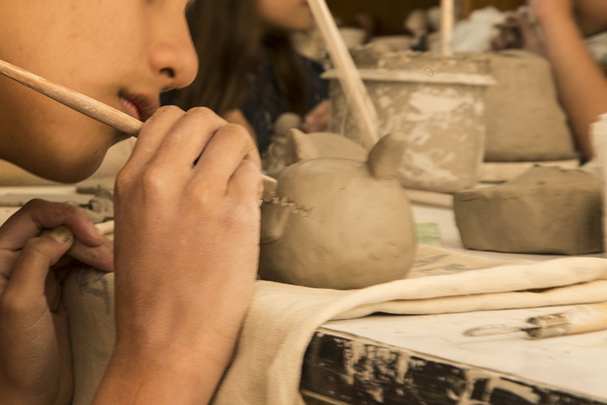
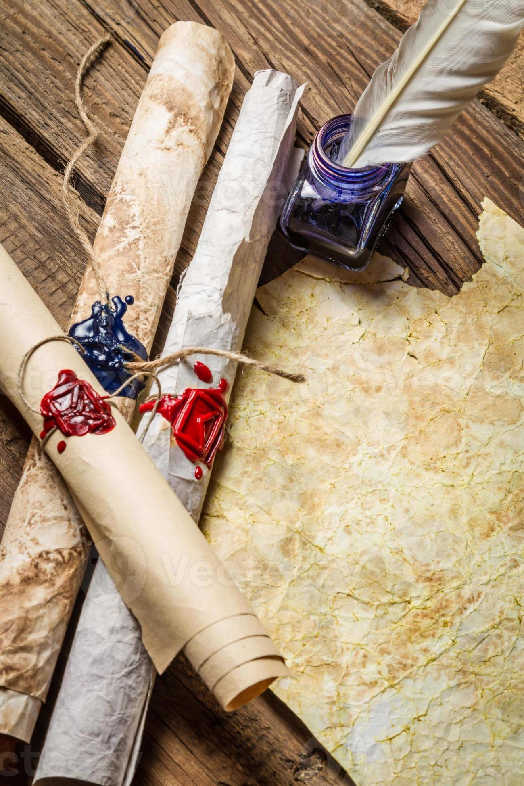
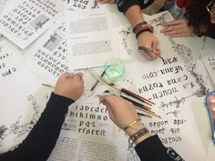
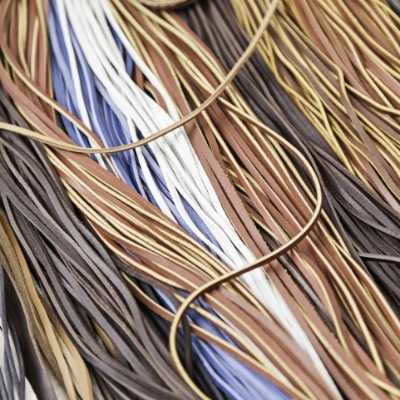
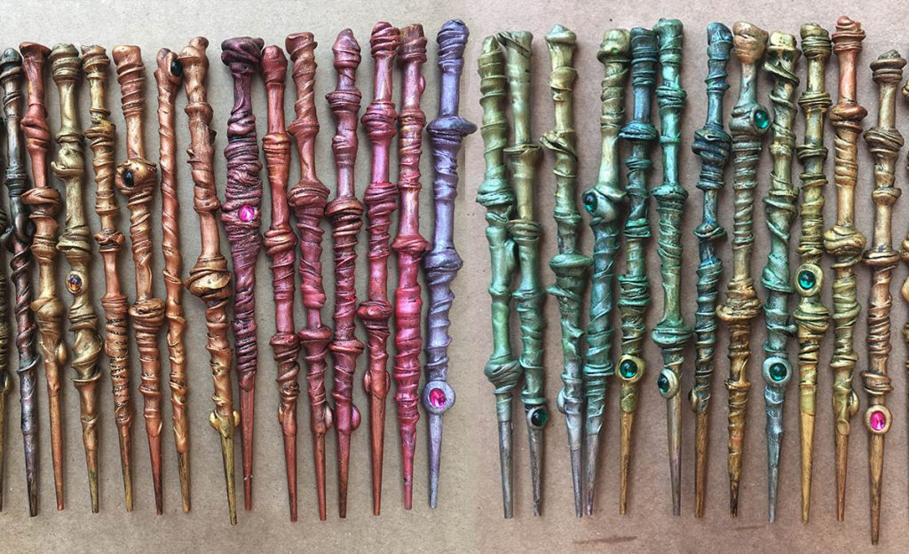
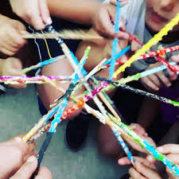
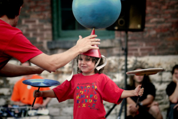
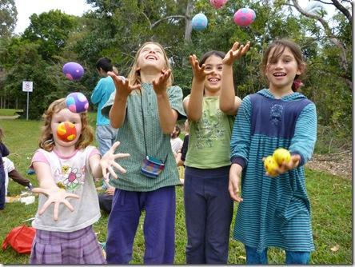

Ofrecemos diferentes talleres, cuidadosamente pensados y diseñados para recrear artes y oficios del medievo.
Nuestro fin es hacer partícipe al público infantil de una manera activa, dinámica y divertida, enseñándoles a través del juego y la manipulación diferentes artes, donde serán ellos mismos quienes viajen hasta el medievo, convirtiéndose en verdaderos artistas y llevándose a casa productos artesanos elaborados por ellos mismos, como recuerdo inolvidable de su viaje al pasado.

Enseñaremos cómo trabajaban los alfareros en la Edad Media. Utilizaremos diferentes herramientas, como paletas, rodillos, espátulas…
Con mandiles para no ensuciarse, los niños disfrutarán modelando figuras y recipientes y decorándolos con diferentes motivos. Los niños podrán llevarse las obras a su casa, donde podrán continuar pintándolas una vez secas.


Utilizando plumas, recrearemos la técnica empleada en la Edad Medieval para escribir o dibujar con tinta sobre un pergamino. Además usaremos grabados con motivos medievales, tinta de colores, rodillos y pinceles, para adornar nuestros pergaminos.
Al terminar enroscaremos el pergamino y lo ataremos con un lazo para poder transportarlo cómodamente, tal como se hacía en la época.

Trabajaremos con diferentes hilos de cuero de colores para confeccionar preciosas pulseras completamente artesanales, que podremos personalizar con diferentes abalorios, descubriendo así uno de los oficios más antiguos.


En diferentes cuentos y leyendas medievales aparecen varitas mágicas con poderes maravillosos, pertenecientes a magos, druidas o hadas, que hasta nuestros días suponen uno de los mayores atractivos de cualquier niño.
Elaboraremos nuestra propia varita mágica a partir de palos de madera con silicona aplicada en espiral para simular verdaderas y profesionales varitas. Los niños decorarán su varita con colores metálicos, plateados y dorados, incrustando diamantes y piedras preciosas.
Al terminar podrán llevarse su varita mágica, convirtiéndose en verdaderos hechiceros y druidas.


En la Edad Media, las artes circenses ya existían y las compañías de circo recorrían las ciudades danzando al son de la música y realizando juegos malabares o acrobáticos.
Pondremos a disposición de los niños diferentes recursos circenses: pelotas, aros, platos chinos, pañuelos de malabares, hula hoops, cariocas… A través del juego enseñaremos a los niños a probar cada disciplina, para que puedan divertirse sintiéndose artistas circenses, además de entrenar su concentración, trabajo en equipo y psicomotricidad.